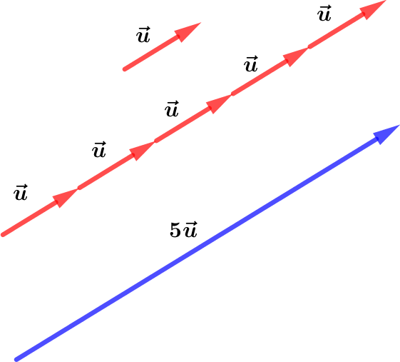
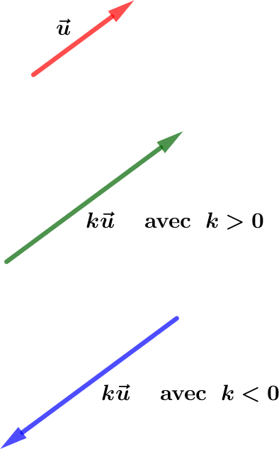
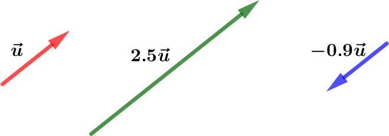
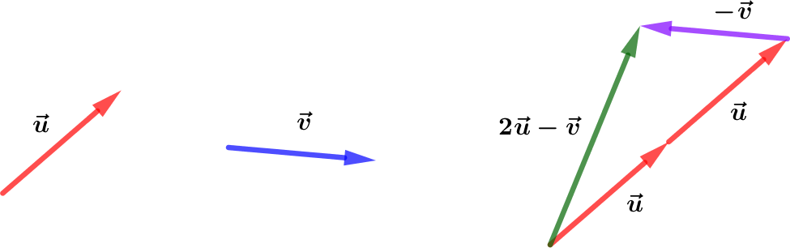
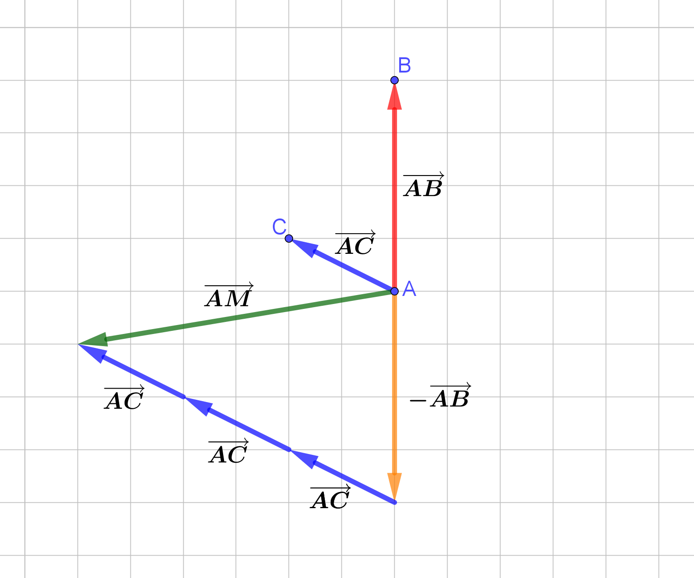
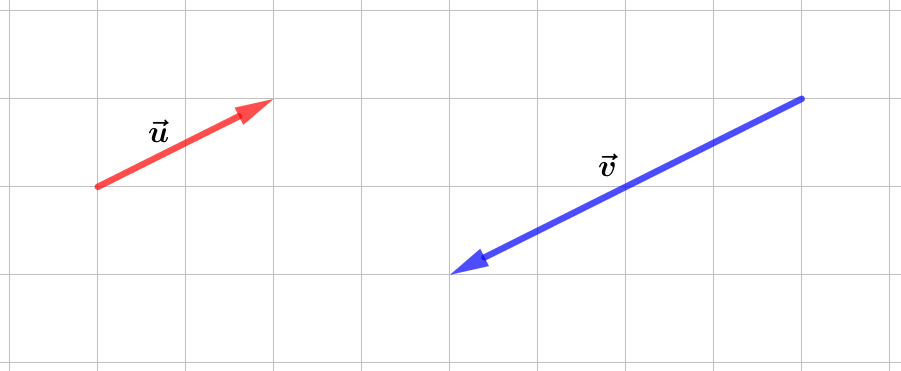
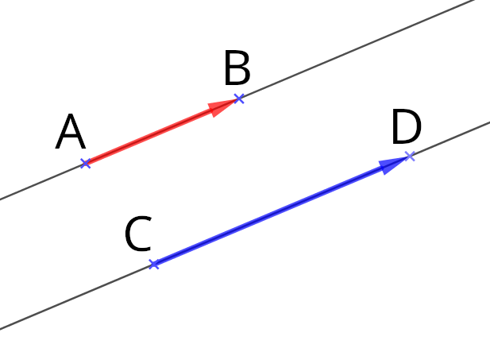
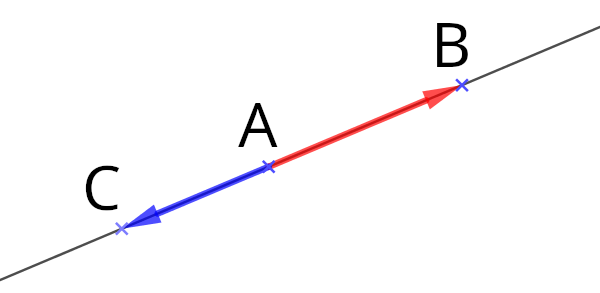

Vecteurs et colinéarité
Produit d’un vecteur par un réel
Exemple
Soit $\vec{u}$ un vecteur du plan.
Appliquer $5$ fois la translation de vecteur $\vec{u}$ revient à appliquer la translation de vecteur :
$$\vec{w} = \vec{u}+\vec{u}+\vec{u}+\vec{u}+\vec{u}=5\times \vec{u}$$

Définition
Definition
On appelle produit du vecteur $\vec{u}$ par le réel $k$, le vecteur noté $k\vec{u}$ :
- de même direction que $\vec{u}$
- de :
- même sens que $\vec{u}$ si $k>0$
- sens contraire que $\vec{u}$ si $k\lt 0$
- de norme égale à :
- $k$ fois la norme de $\vec{u}$ si $k> 0$
- $(-k)$ fois norme de $\vec{u}$ si $k\lt 0$

Exemple
- La norme de $2.5\vec{u}$ est égale à $2.5$ fois la norme de $\vec{u}$
- La norme de $-0.9\vec{u}$ est égale à $0.9$ fois la norme de $\vec{u}$

Methode
Représenter un vecteur défini comme produit et somme de vecteurs
Soit deux vecteurs $\vec{u}$ et $\vec{v}$.
Représentons les vecteurs $\vec{w}=2\vec{u}-\vec{v}$.
- Pour représenter $2\vec{u}$, on place bout à bout deux vecteurs $\vec{u}$.
- Pour représenter $-\vec{v}$, on représente un vecteur de même direction et même longueur que $\vec{v}$ mais de sens opposé.
- Pour représenter le vecteur $\vec{w}=2\vec{u}-\vec{v}$ (ou $2\vec{u}+(-\vec{v})$, on place bout à bout les vecteurs $2\vec{u}$ et $-\vec{v}$.

Exemple
Soit les points $A$, $B$ et $C$
Construisons $M$ tel que : $\quad \vec{AM}=-\vec{AB}+3\vec{AC}$
Pour représenter $\vec{AM}$, on place bout à bout à partir de $A$ :
- $\vec{-AB}$
- $3\vec{AC}$.
Le point $M$ se trouve à l’extrémité du vecteur $3\vec{AC}$.

Methode
Exprimer, par lecture graphique, un vecteur en fonction d’autres vecteurs
Par lecture graphique, exprimons $\vec{u}$ en fonction de $\vec{a}$ et $\vec{b}$.
On construisons “un chemin” de vecteurs $\vec{a}$ et $\vec{b}$ mis bout à bout reliant l’origine et l’extrémité du vecteur $\vec{u}$.
On peut ainsi compter ainsi le nombre de $\vec{a}$ et $\vec{b}$ formant le “chemin”.
On a : $\quad \vec{u}=3\vec{a}+3\vec{b}$

Notion de colinéarité
Définition : Colinéarité
Def
$\vec{u}$ et $\vec{v}$ sont colinéaires signifie qu’ils ont même direction.
Dans ce cas, il existe un nombre réel $k\neq 0$ tel que : $~\vec{u}=k\times\vec{v}$
$$\boxed{\vec{u}~\text{et}~\vec{v}~\text{colinéaires}~\iff~\exists k\in\R^{*}~\text{tel que}~\vec{u}=k\times\vec{v}}$$

Methode
Démontrer que des vecteurs sont colinéaires
On donne $~\vec{u}~$ et $~\vec{v}~$ tel que $~-4\vec{u}+3\vec{v}=\vec{0}~$
❓ $\vec{u}$ et $\vec{v}$ sont-ils colinéaires ?
$$ \begin{aligned} -4\vec{u}+3\vec{v}=\vec{0}\quad & \iff -4\vec{u}=-3\vec{v} \\ \quad & \iff\vec{u}=\cfrac{-3}{-4}\vec{v} \\ \quad & \iff\vec{u}=\cfrac{3}{4}\vec{v}\quad & \iff\quad\vec{u}~\text{et}~\vec{v}~\text{colinéaires} \end{aligned} $$
Applications
Prop
- $\vec{AB}$ et $\vec{CD}$ colinéaires $\iff (AB)\parallel(CD)$
- $\vec{AB}$ et $\vec{AC}$ colinéaires $\iff A$, $B$ et $C$ alignés
| $(AB)\parallel(CD)$ | $A$, $B$ et $C$ alignés |
|---|---|
|  |  |
Propriétés : Colinéarité de vecteurs
Propriété : À l’aide des coordonnées
Prop
Soient $\vec{u}\coord{x}{y}$ et $\vec{v}\coord{x’}{y’}$ deux vecteurs dans un repère $(O;\vec{i},\vec{j})$.
$$\boxed{\vec{u}~\text{ et }~\vec{v}~\text{ colinéaires }\iff (x\times y’)-(y\times x’)=0}$$
Methode
Vérifier si deux vecteurs sont colinéaires
Soient $~\vec{u}\coord{4}{-7}~$ et $~\vec{v}\coord{-12}{21}~$
$$\begin{aligned}xy’-yx’~&=\left(4\times 21\right)-\left((-7)\times (-12)\right)\\~&=84-84=0\qquad\Rarr\vec{u}~\text{ et }~\vec{v}~\text{colinéaires}\end{aligned}$$
Demo
Dire que les vecteurs $\vec{u}\coord{x}{y}$ et $\vec{v}\coord{x’}{y’}$ sont colinéaires équivaut à dire qu’il existe un nombre réel $k$ tel que $\vec{u}=k\times \vec{v}$.
$$ \begin{aligned} \vec{u}~\text{et}~\vec{v}~\text{colinéaires}~ & ~\Rarr~\vec{u}=k\times \vec{v}~\Rarr~\begin{cases}x=k\times x’\\y=k\times y’\end{cases}~\Rarr~\begin{cases}k=\cfrac{x}{x’}\\k=\cfrac{y}{y’}\end{cases} \\ ~ & ~\Rarr~\cfrac{x}{x’}=\cfrac{y}{y’} \\ ~ & ~\Rarr~(x\times y’)=(y\times x’) \\ ~ & ~\Rarr~(x\timesy’)-(y\timesx’)=0 \end{aligned} $$
Réciproquement, si $~xy’-yx’=0~$ et $\vec{v}$ étant non nul, l’une de ses coordonnées est non nulle.
Supposons que $x’\neq 0$. Posons $k = \cfrac{x}{x’}$.
On a :
$$xy’-yx’=0~\Rarr~yx’=xy’~\Rarr~y=\cfrac{x}{x’}y~\Rarr~y=ky’$$
Donc :
$$\begin{aligned}xy’-yx’=0~&~\Rarr~\begin{cases}x=kx’\\y=ky’\end{cases}\\~&~\Rarr~ \vec{u}=k\vec{v} ~\Rarr~ \vec{u}~\text{ et }~\vec{v}~\text{colinéaires}\end{aligned}$$
Ex
Soient $\vec{u}\coord{5}{-2}$ et $\vec{v}\coord{15}{-7}$
$$\begin{aligned}xy’-yx’~&=\left(5\times (-7)\right)-\left((-2)\times 15\right)\\~&=-35+30=-5\qquad\Rarr\vec{u}~\text{ et }~\vec{v}~\text{non colinéaires}\end{aligned}$$
Définition : Déterminant de $\vec{u}$ et $\vec{v}$
Definition
Soient $\vec{u}\coord{x}{y}$ et $\vec{v}\coord{x’}{y’}$ deux vecteurs dans un repère $(O;\vec{i},\vec{j})$.
On note :
$$\boxed{\det(\vec{u};\vec{v})=\begin{vmatrix}x&x’\\y&y’\end{vmatrix}=xy’-yx’}$$
Propriété : Colinéarité et déterminant
Prop
$$\boxed{\vec{u}~\text{ et }~\vec{v}~\text{ colinéaires }\quad\iff\quad\det(\vec{u};\vec{v})=0}$$
Methode
Vérifier si deux vecteurs sont colinéaires à l’aide du déterminant
Soient $~\vec{u}\coord{-6}{10}~$ et $~\vec{v}\coord{9}{-15}~$
$$\begin{aligned}\det(\vec{u};\vec{v})=\begin{vmatrix}-6&9\\10&-15\end{vmatrix}~&=\big((-6)\times (-15)\big)-\big(10\times 9\big)\\~&=90-90=0~\Rarr\quad\vec{u}~\text{ et }~\vec{v}~\text{colinéaires}\end{aligned}$$
Methode
Utiliser la colinéarité pour démontrer que 2 droites sont parallèles
Soient $A(-1,1;)$, $~B(3;2)$, $~C(-2;-3)$, $~D(6;-1)$ et $~E(5;0)$.
Démontrons que $(AB)\parallel(CD)$.
On a :
$$\vec{AB}=\begin{pmatrix}3-(-1)\\2-1\end{pmatrix}=\begin{pmatrix}4\\1\end{pmatrix}\quad\text{et}\quad\vec{CD}=\begin{pmatrix}6-(-2)\\-1-(-3)\end{pmatrix}=\begin{pmatrix}8\\2\end{pmatrix}$$
Et donc :
$$\det(\vec{AB};\vec{CD})=\begin{vmatrix}4&8\\1&2\end{vmatrix}=(4\times 2)-(8\times 1)=0$$
Donc $~\vec{AB}~$ et $\vec{CD}$ sont colinéaires $\iff(AB)\parallel(CD)$
Methode
Utiliser la colinéarité pour démontrer que 3 points sont alignés
Soient $A(-1,1;)$, $~B(3;2)$, $~C(-2;-3)$, $~D(6;-1)$ et $~E(5;0)$.
Démontrons que $E$, $B$ et $D$ sont alignés
On a :
$$\vec{EB}=\begin{pmatrix}3-5\\2-0\end{pmatrix}=\begin{pmatrix}-2\\2\end{pmatrix}\quad\text{et}\quad\vec{ED}=\begin{pmatrix}6-5)\\-1-0)\end{pmatrix}=\begin{pmatrix}1\\-1\end{pmatrix}$$
Et donc :
$$\det(\vec{EB};\vec{ED})=\begin{vmatrix}-2&1\\2&-1\end{vmatrix}=\big((-2)\times (-1)\big)-(2\times 1)=0$$
Donc $~\vec{EB}~$ et $\vec{ED}$ sont colinéaires $\iff E$, $B$ et $D$ sont alignés